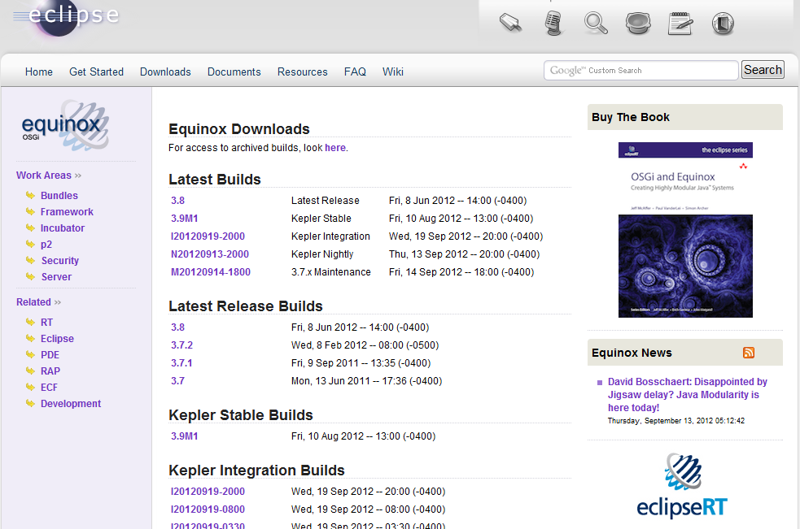

OSGi 每日资讯 网罗全球最新OSGi技术资讯
OSGI开发环境的建立和HELLOWORD示例
OSGI开发环境的建立和HELLOWORD示例
前言
看了前面三篇入门篇以后是不是跃跃欲试呢？这篇文档介绍如何使用OSGi框架的一个实现——Equinox来教你如何配置一个简单的OSGi开发环境，并且在这个环境上开发一个HelloWorld程序，这其中会涵盖前面的入门篇讲到的三个层次的内容，让你在实践的同时巩固之前了解的内容。话不多说，我们开始吧！
1 OSGi开发环境的建立
1.1 Equinox是什么
从代码角度来看，Equinox其实就是OSGi核心标准的完整实现，并且还在这个基础上增加了一些额外的功能（比如为框架增加了命令行和程序执行的入口）。我们在之前入门篇讲解的都东西其实都是OSGi核心标准的一小部分。其实它的核心就是一个jar包，这个jar包既能执行（作为标准Java包的特性），也是一个bundle（Manifest里面含有OSGi bundle特有的元数据）。
现在你需要知道的就是，我们能够利用Equinox项目的代码来运行一个实实在在的OSGi框架，框架启动后，你就可以将你开发好bundle放到里面运行。
1.2 下载Equinox
Equinox在http://download.eclipse.org/equinox上有官方下载，里面列出了各个版本供我们选择：

在这里，我们使用3.7版本的Equinox，下载好以后放在一个单独的文件夹下（这里我的路径是E:\OSGI framework\equinox）：
1.3 从命令行启动框架
如果启动这个框架的话，有了上面的jar包就足够了，我们进入命令行输入如下命令：java –jar org.eclipse.osgi_3.7.0.v20110613.jar -console ，然后就会进入Equinox的控制台：
如果出现osgi>的提示符，就说明启动成功了。
Equinox的控制台的部分基本命令如下（区分大小写）：
| install [URL] | 将URL表示的bundle安装到框架中 |
| uninstall [bundleID] | 将id=bundleID的bundle卸载 |
| start [bundleID] | 启动一个bundle |
| stop [bundleID] | 停止一个bundle |
| refresh [bundleID] | 刷新bundle |
| update [bundleID] | 更新bundle 的内容 |
| ss | 简单显示所有bundle的状态 |
| status | 展示安装的bundle和注册的服务 |
| headers [bundleID] | 展示bundle 的manifest中的元数据 |
1.4 在Eclipse中建立开发环境
在上一节中大家看到启动和控制框架的方法，是相当简单的一个过程。不过单单只是运行环境还不够，我们还需要开发环境。
1.4.1 设置
首先我们不需要安装必须的插件，只要你有较新版本的Eclipse就行了。然后进入Eclipse的window->preferences界面，选中Plug-in Development下的Target Platform：
现在右边只有一个Runing Platform的，我们任务是点击"Add…"按钮来增加一个我们自己的的platform，进入如下界面：
选择默认的第一个就好，点击next。
再点击这里的"Add…"：
选择"Directory"：
选择你的Equinox的jar包所在的路径,然后点击finish，回到刚才的界面：
这时候你就会发现里面多出来了你刚刚设置的路径，路径后面描述的"1 plug-ins available"则就是说的我们放置的Equinox的jar包。
继续点击finish，回到最开始的界面：
这时候多出来了一个新的target platform，勾选上，然后确定。
1.4.2 启动
打开菜单项Run->Run configurations…，在OSGi Framework项中，新建一个Run configuration：
这里面现在已经自动包含了Equinox的jar包了，点击Run，看看运行的效果：
Eclipse的控制台中也出现来了osgi的提示符，说明你已经成功启动了。
你可以试试刚才讲的那些命令，看看能输出些什么（比如上图中我输入了ss）。
1.4.3 新建一个project
打开新建project的界面，选择Plug-in Project：
然后输入project的名字，TargetPlatform处选择an OSGi framework->Equinox或者standard都行，点击下一步：
这里实际上是对bundle的Manifest文件的设置，其中的ID就是Bundle-SymbolicName，Version就是bundle的版本号，下面还能决定是否定义BundleActivator，点击finish就创建了一个project：
至此，开发环境已经建立完毕（这个project只是为了演示怎么建立，不会在接下来的内容中用到，可删之）。
2 HelloWorld
现在可谓是万事具备，只欠Helloworld了。为了将OSGi框架的三个层次都涵盖到，这个Helloworld可能会比其他你见到的OSGi Helloworld程序要复杂一点点。如果对代码中的一些API感到生疏，记得回到之前的入门篇中找到对应的内容，这样对你理解代码会有帮助。里面的关键代码已经用黄色高亮显示。（出于篇幅考虑，代码中的import语句都省略）
2.1 HelloWorld的定义与实现
首先我们创建一个工程org.serc.helloworld，在这个工程里面，我们创建一个包含sayHello方法的接口，准备作为服务接口：
package org.serc.helloworld;
public interface Hello {
void sayHello();
}
然后，对这个接口进行实现：
package org.serc.helloworld.impl;
public class HelloImpl implements Hello{
final String helloString;
public HelloImpl(String helloString){
this.helloString = helloString;
}
public void sayHello(){
System.out.println(this.helloString);
}
}
这个类实现的sayHello所做的工作就是输出一个在对象构造的时候得到的helloString 字符串。
为了将这个接口暴露出来，我们需要在MANIFEST文件中加入如下条目：
Export-Package: org.serc.helloworld;version="1.0"
接下来，为了把这个服务注册到框架中，我们定义了一个Activator：
package org.serc.helloworld.activator;
public class Activator implements BundleActivator {
private List<ServiceRegistration> registrations = new ArrayList<ServiceRegistration>();
public void start(BundleContext ctx) {
registrations.add(ctx.registerService(Hello.class.getName(),new HelloImpl("Hello, OSGi"), null));
}
public void stop(BundleContext ctx) {
for (ServiceRegistration registration : registrations) {
System.out.println("unregistering: "+ registration);
registration.unregister();
}
我们为这个HelloImpl传入了"Hello, OSGi"的字符串
为了让这个Activator能够工作，需要在MANIFEST文件中做如下定义：
Bundle-Activator: org.serc.helloworld.activator.Activator
这个bundle 最终的MANIFEST内容如下：
Bundle-ManifestVersion: 2
Bundle-SymbolicName: org.serc.helloworld
Bundle-Version: 1.0
Bundle-Activator: org.serc.helloworld.activator.Activator
Import-Package: org.osgi.framework
Export-Package: org.serc.helloworld;version="1.0"
你的Eclipse工程中现在应该是这样：

2.2 获得并执行SayHello服务
创建一个工程org.serc.helloworld.client，创建一个叫HelloUser的BundleActivator，其中的start方法会获得接口为Hello的服务对象，并且通过这个对象来调用sayHello方法：
package org.serc.helloworld.client;
public class HelloUser implements BundleActivator {
public void start(BundleContext ctx) {
ServiceReference ref = ctx.getServiceReference(Hello.class.getName());
if (ref != null) {
Hello hello = null;
try {
hello = (Hello) ctx.getService(ref);
if (hello != null)
hello.sayHello();
else
System.out.println("Service:Hello---object null");
} catch (RuntimeException e) {
e.printStackTrace();
} finally {
ctx.ungetService(ref);
hello = null;
}
} else {
System.out.println("Service:Hello---not exists");
}
}
public void stop(BundleContext ctx) throws Exception {
}
}
为了获得Hello这个接口的定义，我们还需要在MANIFEST文件中import Hello所在的package：
Bundle-ManifestVersion: 2
Bundle-SymbolicName: org.serc.helloworld.client
Bundle-Version: 1.0
Bundle-Activator: org.serc.helloworld.client.HelloUser
Import-Package: org.serc.helloworld;version="[1.0,2.0)",org.osgi.framework
2.3 HelloWorld程序的流程
可能光看代码会比较不容易看清楚程序的执行流程，下图表示了这几个类的各个功能的相互依赖关系，整个关系从Hello接口的定义开始；然后到Hello接口被实现，得到HelloImpl；再到Activator将HelloImpl注册为框架中的一个服务，再到HelloUser通过与框架交互得到刚才注册的服务，并且使用这个服务从而输出字符串；最后一个可选流程是当我们stop org.serc.helloworld这个bundle的时候，程序会将之前注册的服务注销掉。
2.4 程序的执行
通过上面的工作，我们得到了两个自己定义的bundle：
org.serc.helloworld
org.serc.helloworld.client
现在打开Run configurations界面，我们会看见Bundles标签里面多出来了这两个bundle：
也就是说，OSGi框架在启动的时候，会自动install和start这2个bundle，我们点击Run按钮，看看会有什么结果：
2.5 利用命令行查看程序执行过程中框架状态的变化
2.4其实只给出了一个结果，如果你还不太清楚这个结果具体是怎么出来的，那么这一节的内容应该能够帮助你更好的理解输出结果的过程。下面我们通过Equinox的一些命令行来一步一步安装和执行bundle，并且查看过程中框架的状态变化，来让你们搞清楚这个结果是怎么来的。
首先在Run configuration中取消两个helloworld bundle的自动启动：
然后点击Run，这时候就不会立即输出Hello， OSGi字符串了，现在我们先用"ss"命令查看bundle 的状态：
可见两个bundle并不是出于ACTIVE状态，说明并没有启动，现在我们执行"start 8"来启动org.serc.helloworld这个bundle：
在用services命令查看当前已经注册的服务，我们会看到一大堆的系统服务中多出来如下一项服务：
这显然是我们在start以后注册上去的，但是现在还没有任何一个bundle在使用这个服务。
接下来我们start 9号bundle，也就是我们用来调用服务的bundle：
这时就输出了"Hello， OSGi"的字符串。
那么如果我们先启动9号bundle而不启动8号bundle会怎么样呢？大家可以试一试，因为我们在代码中已经对没有服务的异常情况做了处理，届时会有相应的输出。
我们先停止8号bundle（这里的图中bundleID增加了，大家对号入座）：
大家可以看见刚才注册的服务已经被注销了，现在我们执行refresh 11（也就是刚才的9号bundle）来重新执行其中BundleActivator的start方法：
可见Hello服务已经不复存在了。从这里我们可以看出来，其实Bundle的启动顺序也是一个需要注意的环节，有时候你所定义的bundle是具有顺序敏感性的，必须要某些前置bundle启动了以后，后面的bundle才能正确启动。
3 小结
这篇文档是入门篇的最后一章了，希望读者在花时间看完这4篇文档并且动手实践后能够有所收获，并且对OSGi框架的工作原理及其优势能有一个比较清晰的了解和认识。如果你依然有兴趣深入了解OSGi的世界，或者觉得这些东西对你来说有点小儿科了，那就让我们在进阶篇中见面吧。
本文由OSGi China提供 转载请注明来源
评 论 Comments
现在可谓是万事具备，只欠Helloworld了。为了将OSGi框架的三个层次都涵盖到，这个Helloworld可能会比其他你见到的OSGi Helloworld程序要复杂一点点。如果对代码中的一些API感到生疏，记得回到之前的入门篇中找到对应的内容，这样对你理解代码会有帮助。里面的关键代码已经用黄色高亮显示。（出于篇幅考虑，代码中的import语句都省略）
Is Team Project rename included in TFS Update 1 or the next update, or how about the update after that? We've been waiting for over 2 years for the feature and would love to get it before vs.next. As for the whole...there is no more service pack just updates thing....sounds nice on paper...but how many updates will we have to push through our OPS manager to get them deployed to our internal developers? 3,5,8? Also what's the support criteria for these updates (do they fall under the normal support arrangements and are supported for 5 years or something else?) Also how does the quality on these updates compare to say hotfixes/QFEs?
2.4其实只给出了一个结果，如果你还不太清楚这个结果具体是怎么出来的，那么这一节的内容应该能够帮助你更好的理解输出结果的过程。下面我们通过Equinox的一些命令行来一步一步安装和执行bundle，并且查看过程中框架的状态变化，来让你们搞清楚这个结果是怎么来的。 首先在Run configuration中取消两个helloworld bundle的自动启动：